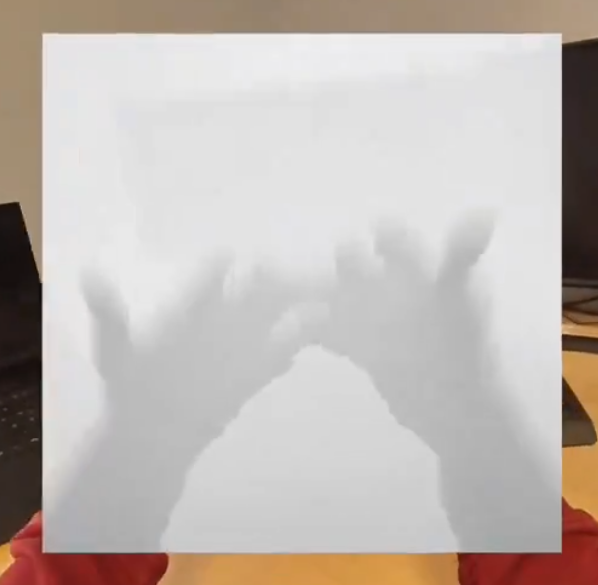
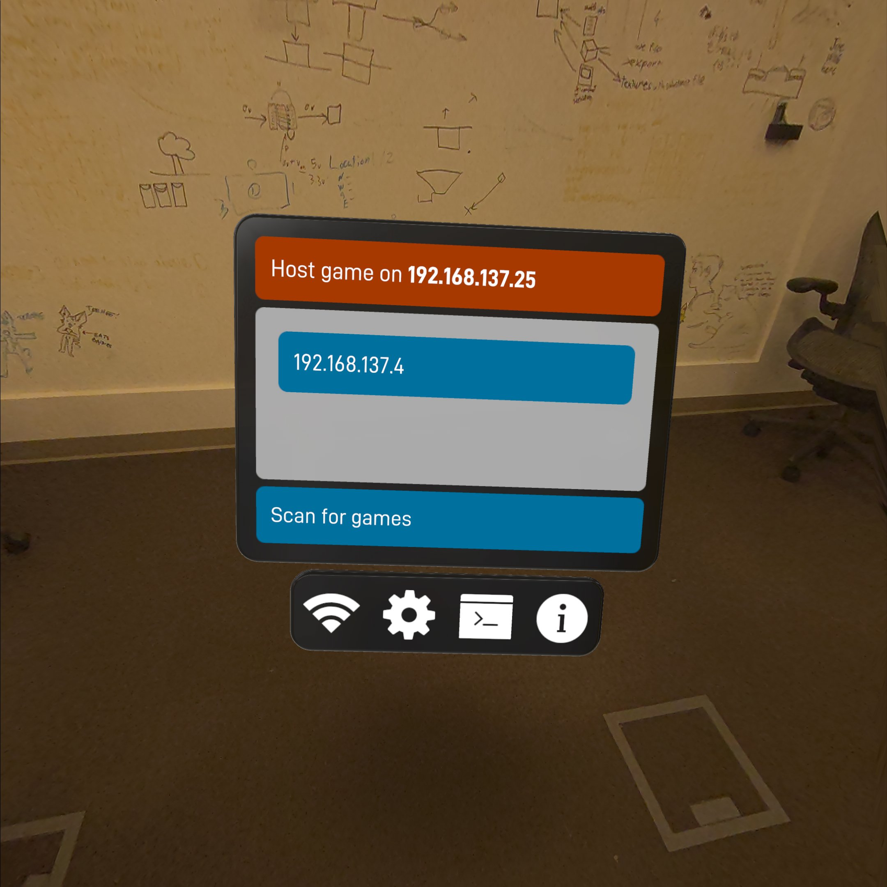

mixed reality lasertag prototype
Turn any space into a laser tag arena for you and your friends.


I want mixed reality to be more than just a gimmick; I want games that don't just exist in your environment, but respond to it and take advantage of it. I also want games that encourage physical movement and real-life socializing.
This prototype is my effort to make such a game. It is a co-located multiplayer mixed reality app that turns any space into a large-scale laser tag arena for you and your friends.
environment depth understanding

Laser bullets hit real objects using the headset's live depth understanding, so there is no need for each user to spend time pre-scanning their environment. Players are meant to run around and duck behind cover in their physical space.
This technique does have a major drawback: players can't hit what the headset can't see, so you can't shoot around corners or behind yourself.
However, this technique doesn't require that each player spend several minutes carefully scan the space. Using live depth makes setup much faster and more convenient.
starting a match

Trying to connect several friends manually is cumbersome. Starting a game should be frictionless, so the headsets automatically list game hosts on the local network.
colocation anchors
All the headset orientations sync up automatically. The host drops and syncs spatial anchors as they move around, giving the other headsets absolute reference points to spatially calibrate to.
special thanks
I'd like to thank my friend Hazel for spending several hours over the course of the project helping me test and troubleshoot :)
third party art assets
The demo video at the top of the page uses these placeholder assets: